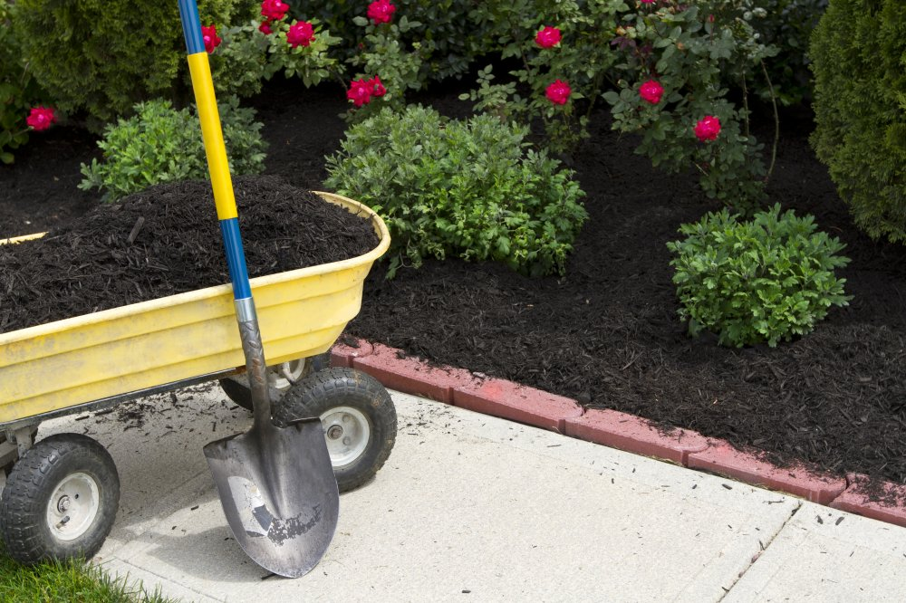

Servicios
Abonado del Jardin

El jardín de tu casa puede estar formado por distintos elementos vegetales: césped, árboles, arbustos, flores, rosaledas, trepadoras, estanques, etc. A su vez, cada una de estas formaciones estará compuesta por distintas variedades de plantas, y cada una de ellas requerirá de los nutrientes necesarios para su correcto desarrollo.
¿Por qué es necesario abonar el jardín?

Como hemos comentado, las plantas requieren de nutrientes para desarrollarse bien. El sustrato necesita ser enriquecido regularmente, mediante el aporte de fertilizantes. Además, tus plantas se someten a diferentes exigencias a lo largo del año: podas y recortes, siegas, pisoteos, etc.
Gracias al abono de jardín para plantas estaremos brindando la energía suficiente para superar este tipo de adversidades y mantener un ciclo vital sano. una buena fertilización implementará defensas en tus plantas, para que estas sean capaces de resistir a las numerosas plagas y enfermedades.
Por último, es necesario abonar el jardín también por una cuestión estética. Tus plantas lucirán vigorosas, fuertes, llenas de vida y color, gracias a los elementos nutricionales proporcionados por los fertilizantes.
Época para abonar el jardín
Lo más probables es que tengas dudas acerca de cuándo abonar tu jardín. En Casaplanta Vigo, te despejamos las dudas acerca de este tema.
En cuanto al abonado del césped, se debe realizar 1 o 2 días después de la siega, siendo necesario que este esté seco. Una vez finalizado, es importante un riego regular para evitar posibles quemaduras.
Por otra parte, el abono para plantas se ha de llevar a cabo durante toda la temporada de crecimiento, coincidiendo con las estaciones de primavera y de verano. En un clima donde no hay otoño ni invierno, es recomendable abonar durante los meses de más calor y menos lluvia.